|
GE Power |
US Government Controlled TechnologyExport License RequiredYes No
|
|
GE Power Services Gas Turbine Repair Engineering 300 Garlington Road Greenville, South Carolina, U.S.A. |
GE Technical License Controlled TechnologyTechnical License RequiredYes No |
|
Field Repair Document |
FRD-2017-1055 |
Rev. - |
|
Title: |
Chromatic Confocal E4 Point tool |
|
Model Applicability: |
All |
|
Component or Unit Serial Numbers (or “All”): |
All |
To be performed by Qualified Service Center Personnel?Yes No |
|
|
|
|
|
|
|
TECHNICAL CONTENT OF THIS DOCUMENT IS APPROVED BY GE GAS TURBINE REPAIR ENGINEERING |
|
||
GE Gas Service Center Authorized Distribution |
|||||
|
Service Center |
Type |
Authorized (Y/N) |
Service Center |
Type |
Authorized (Y/N) |
|
BGGTS |
JV |
N |
Houston |
GE |
N |
|
CAPCO |
TTA |
N |
KPS |
TTA |
N |
|
Dartford |
GE |
N |
McAllen |
GEA |
N |
|
GE-Hungary |
GE |
N |
Nigeria |
GE |
N |
|
GE Keppel |
JV |
N |
PT Gents |
JV |
N |
|
GEPTEC - Kaluga |
GE |
N |
QHD (GE-HPEC) |
JV |
N |
|
GEMTEC (formerly MEELSA) |
JV |
N |
TGTS |
JV |
N |
|
Greenville |
GE |
N |
TNB TENAGA |
TTA |
N |
|
GTS |
JV |
N |
|
|
|
GE Oil & Gas Service Center Authorized Distribution |
|||||
|
Service Center |
Type |
Authorized (Y/N) |
Service Center |
Type |
Authorized (Y/N) |
|
Algesco |
JV |
N |
Houston O&G |
GE |
N |
|
Barcelona (PEGS) |
GE |
N |
Qatar |
JV |
N |
|
Florence |
GE |
N |
Sapura Crest |
TTA |
N |
|
Trinidad |
GE |
N |
Turbimeca |
GE |
N |
|
Edmonton |
GE |
N |
ZKMK (Kazakhstan) |
JV |
N |
|
GEA = GE Aviation | JV = Joint Venture | TTA = Technology Transfer Agreement |
|
NOTE: These tables do NOT imply Service Center Certification or Qualification. |
|
© COPYRIGHT 2018 GENERAL ELECTRIC COMPANY The information contained in this document is GE proprietary information and is disclosed in confidence. The technical data herein is the property of GE and shall not be used or disclosed to others without the express written consent of GE. If consent is given, this notice or - as necessary, the supplementary notice set forth on each page of this document, shall appear on any such communication. In addition, the technical data herein, and the direct product of the data, may not be diverted, transferred, re-exported or disclosed in any manner without prior written approval. |
Functional Discipline |
Name |
Signature |
Date |
|
Author – Outage Engineering |
Dave Runkel |
|
|
|
Principal Engineer |
Sandra Kolvick |
|
|
|
Manager – Outage Engineering |
Ryan Smith |
|
|
|
Clearances |
Darin Magera |
|
|
|
|
|
|
|
|
Rev |
Description |
Signature |
Date |
|
- |
Original Issue |
See Above |
|
|
|
|
|
|
|
|
|
|
|
|
|
|
|
|
|
|
|
|
|
|
|
|
|
|
|
|
|
|
|
|
|
|
|
|
|
|
|
|
|
|
|
|
|
|
|
|
|
|
|
|
|
|
|
|
1. Purpose
2. Parts Applicability
3. Description
4. Safety Information and Warnings
5. Tools, Equipment, and Materials
6. Procedure
7. Tool Maintenance Instructions
8. Appendix
8.1. Appendix A – Reference Documents
The Chromatic Confocal e4 Point tool is designed to measure clearances between rotating compressor airfoils and the compressor casing. The information collected via this tool is then passed to a User Interface (UI) via the e4Point app. The overall tool and app generates a customer report as well as stores data for GE internal use by the clearances team.
2. Parts Applicability - All frames and units with Compressor clearance probe holes
The e4 point clearance system consists of the controller box and a frame specific sensor mastering probe, and spacers. Selection of the controller sensor is outlined below based on the frame size and will dictate which spacers and sensor set are ordered for use at site or in manufacturing.
4. Safety Information and Warnings
The e4 point Chromatic Confocal tool emits white light which is not harmful if viewed under normal circumstances. Care should be taken not to shine lights directly into the eyes.
The Signal from the sensor is sent through Fiber Optic cables. Care must be taken to prevent any damage to the fiber optic cable. If cables are in any way damaged a new sensor and controller must be obtained.
5. Tools, Equipment, and Materials
5.1. Tools List (covered in this document) from 128T8348 (KIT_ASSEMBLY)
|
Component |
Frame applicability |
|
Sensor Kit |
|
|
134T1086 |
Short Probe Kit |
|
134T1076 |
Long Probe Kit |
|
Controller |
All- Sensor and Controller are calibrated as a unit. Cannot interchange without proper calibration |
|
RedPark Cable |
All |
|
Mastering Fixture |
Sensor specific |
|
Dark Reference Cap |
Sensor specific |
|
Dummy Probe |
Sensor and Frame specific |
|
Spacer Kits |
|
|
840-90-04 |
7FA+e |
|
840-90-07 |
9FA |
|
840-90-11 |
9FB |
|
840-90-12 |
7FB |
|
840-90-13 |
6FA |
|
840-90-14 |
6B |
|
132T7353 |
9HA.02 |
|
134T1087 |
9HA.01 |
|
134T1082 |
7F.05 |
|
134T1088 |
7HA.01 |
|
134T1089 |
7HA.02 |
|
134T1089 |
7HA.03 |
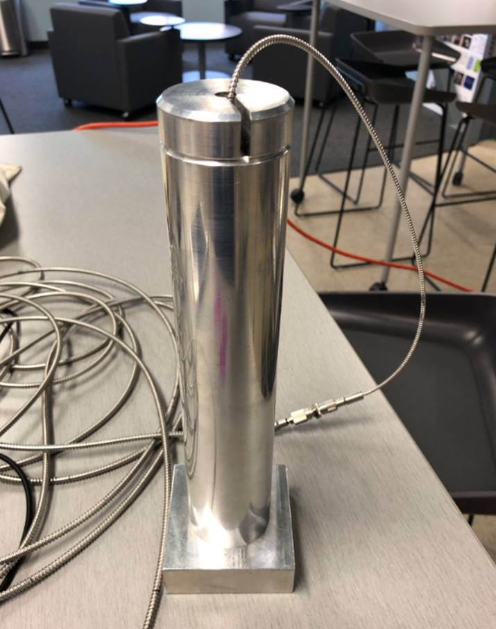
Long Mastering Fixture with Long probe
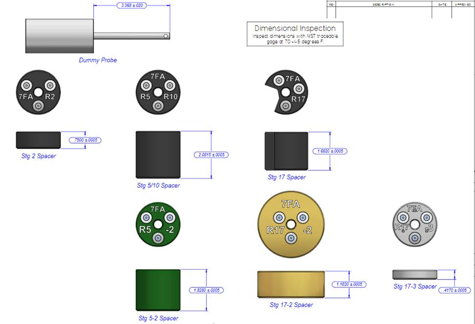
7FA+e Spacers and Dummy Probe
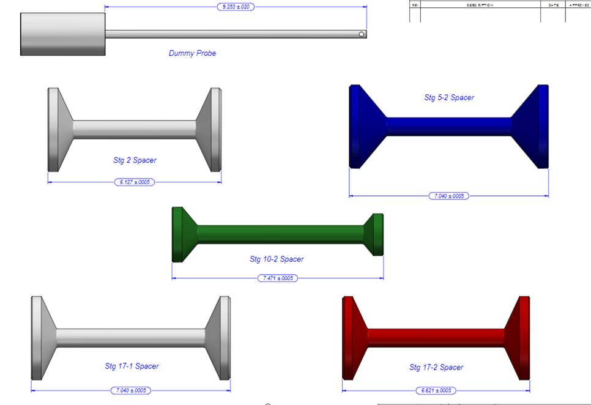
9FA Spacers and Dummy Probes
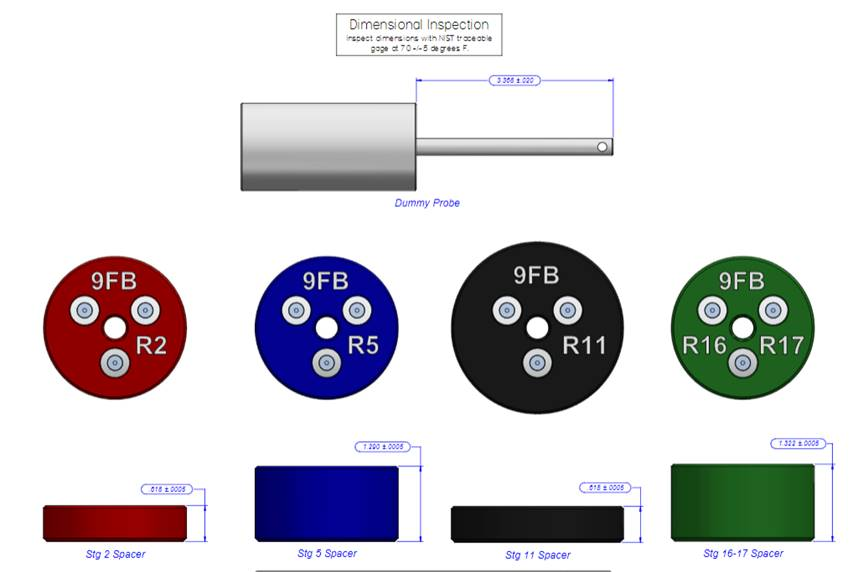
9FB Spacers and Dummy Probe
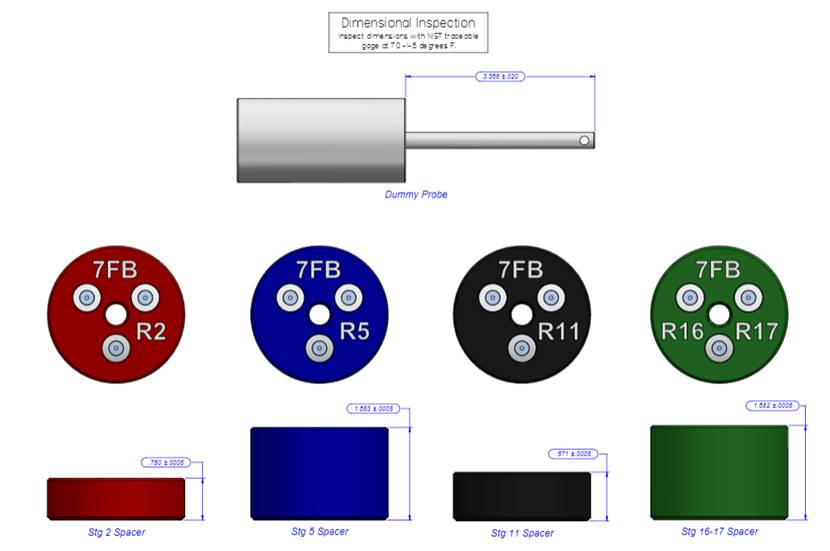
7FB Spacers and Dummy Probe
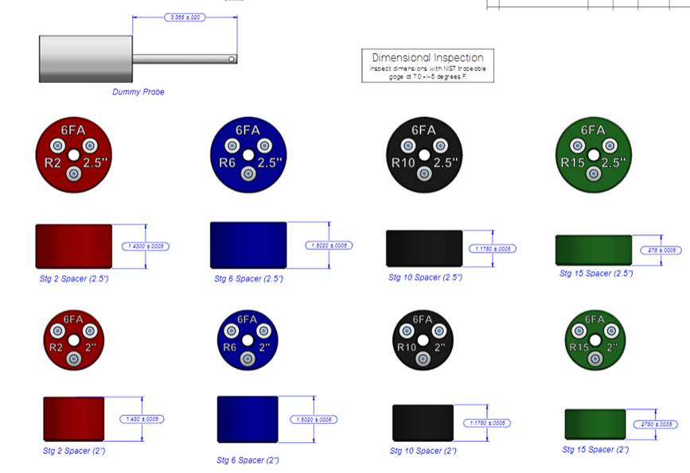
6FA Spacers and Dummy Probes
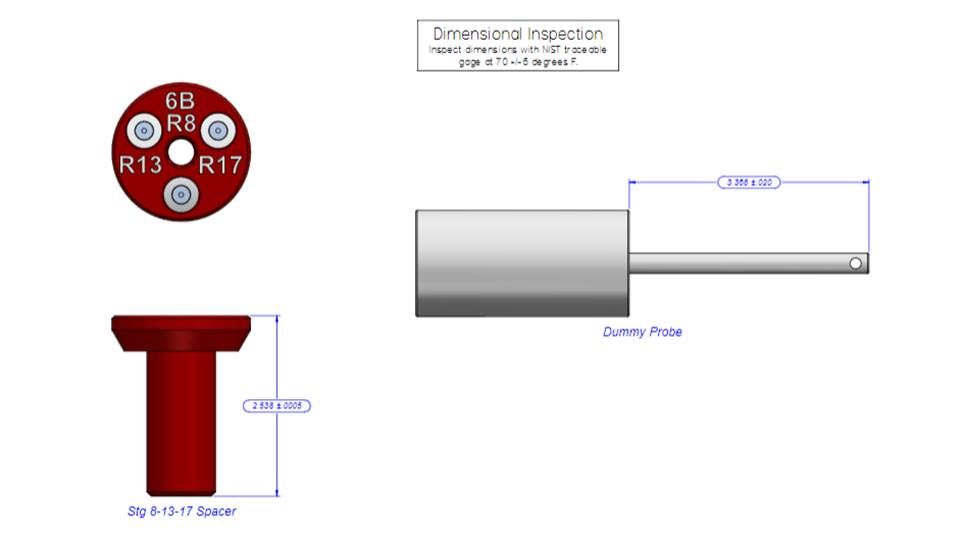
6B Spacer and Dummy Probe
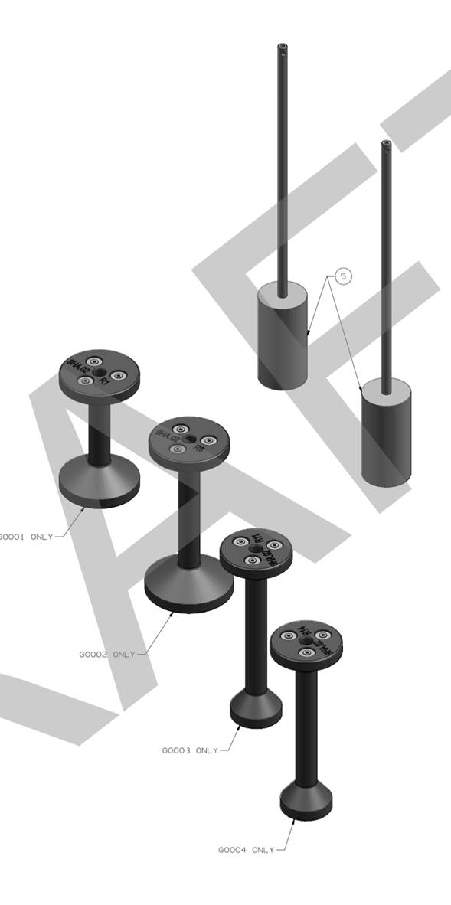
9HA.02
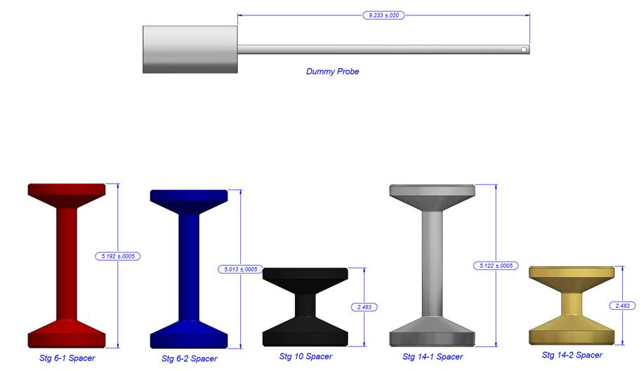
7HA.01 Spacers
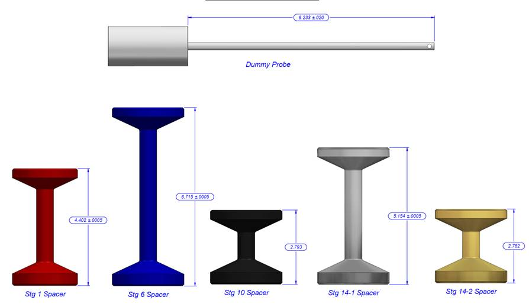
7HA.02-16 Spacers
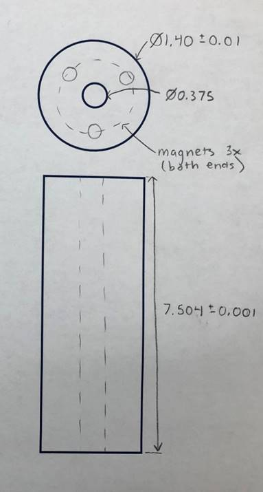
7HA.02-18 R10 and R14 DWC Spacer
Input/output Connections to the base station as identified in the figure above:
1.) Main power supply cord input. See Warnings and Safety Information section for cored power rating limits.
2.) Fiber optic connection from sensor to controller
3.) RedPark connection from iPad/iPhone serial connection to controller
5.1.1. Environmental use and cleaning
5.1.2. Cleaning Instructions:
5.1.3. The base station, sensor, and cabling are NOT considered submergible or waterproof. To clean the external features and spacers, use a lint free cloth dampened with water or light duty general purpose cleaner. Wipe residue free and wipe excess liquid. Do not close lid to case before surfaces are dry.
5.1.4. Dry Cleaning: wipe the face of the sensor lens with an optics anti-static lint-free brush or cloth or blow with dehumidified, clean, oil-free compressed air.
5.1.5. Wet Cleaning: Use a clean soft, lint-free cloth or lens cleaning paper with pure alcohol (isopropyl)
5.2. E4 Point Procedure – High Level Overview
5.2.1. Pre Set-Up – tool inspection, verify GT assembly configuration
5.2.2. Set up base station
5.2.3. Remove all clearance hole plugs, including inner casing plugs and clean area around plug hole to ensure proper magnetic mating and FOD prevention into turbine
5.2.4. Ensure rotor is on Turning gear or otherwise rotating with Lift Oil if required. Note shaft RPM.
5.2.5. Install stage and frame specific spacer into clearance probe holes and verify NO sensor interference with turbine blades by inserting the dummy probe. Ensure rotor rotates through multiple airfoils before removing dummy probe to ensure no interference with the turbine blades
5.2.6. Failure to check gross clearance with the Dummy Probe can result in sensor decapitation and FOD introduction to the turbine.
5.2.7. Install sensor into spacer
5.2.8. Follow e4 Point App process for measuring a turbine for specific stage and location
5.2.9. When data has been recorded for current location, measurement can then be performed at next location on the same stageby performing the above procedure from step 5.2.5
5.2.10. When all locations for current stage have been measured repeat procedure for next stage starting with step 5.2.5
5.2.10.1. The correct spacer must be used for each stage. Failure to use correct spacer can cause sensor decapitation, FOD introduction to the turbine, or failure to accurately measure clearances
5.2.11. When all stages and locations have been measured load all raw data files to GE Box
5.2.12. Generate the customer report and load to GE box and send to customer if applicable
5.2.13. Disassemble tool and package back into appropriate containers
5.3. Pre Set-Up
5.3.1. E4 point Tool Inspection
5.3.1.1. Verify all the parts listed above are in the kit and appear to be in good condition. Only spacers for desired frame will be included in shipped kit. Dark Reference cap should fit snuggly over sensor tip. Mastering fixture should be clear of debris or blockages. The magnets should not be cracked or broken on either the sensor or spacers.
5.3.1.2. Electrical and sensor connections should be clear of debris.
5.3.2. System Test
5.3.2.1. Follow the procedure in section 5.2 to set up the unit and verify connectivity with the sensor.
5.3.2.2. An iPad or iPhone with GE mobile Iron installed is required in order to install the e4Point tool from the GE Apps Store
5.3.3. Gas Turbine Setup
5.3.3.1. The upper GT cases are installed and fully torqued - All cases must be installed and tensioned including the mini-case.
5.3.3.2. All Clearance probe plugs are removes and surfaces cleaned, including inner compressor case/Double Wall Casing Plugs.
5.3.4. Lift oil and turning gear
5.3.4.1. The rotor will need to be turned between 0.5 -15 RPM using the turning gear or some other method that will turn the rotor at a constant speed. (Some sites have used an air motor attached to the manual input on the turning gear.)
5.3.4.2. The rotor will also need to be on lift oil.
1. (Note that it is possible that the measurement of the rotor lift due to lift oil will be needed and the deviation will need to be included on the alignment diagram.)
2. Some sites do not have lift oil; in this case, consult the MLI 0404 for that target without lift oil. (nearly every site will use lift oil, currently only a few early 7HA01 sites do not have lift oil)
5.4. System setup
NOTE: instructions are also available in the app
5.4.1. Download the “e4 Point” app from the GE app store to a GE iPad or iPhone.
5.4.2. Connect the fiber optic cable to the controller. Connect the RedPark power Cable to the Redpark Power supply on the Base Station and the RedPark Serial Adapter to the controller. Connect Base station power supply cable to the Base Station and to a 120V power source
5.4.3. Position the base station near the gas turbine compressor section. Keep in mind that the sensor cable, Redpark Cables, and Power Cables constitute a tripping hazard. Care should be made to position the base station close to the compressor casing. Additionally, the Fiber Optic cable has a 3x maximum radius and should never be kinked
5.4.4. Power on the Base station (120/220 Vac, 50/60Hz). An adaptor may be needed. Turn the base station on by flipping the single rocker switch.
5.4.5. Connect iPad or iPhone to the armored lightning cable, and then open the e4 point App. You can confirm that the app has connected via the SERIAL indicator circle in the top right corner of the app. The indicator circle should be GREEN as shown below.
5.4.6. Sensor and controller warmup time is 30 minutes. Measurement prior to 30 minute warm up period will result in erroneous dark reference, mastering, and clearance data.
5.4.6.1. Good practice is to set up and turn on the e4 point tool and then remove clearance hole plugs and note casing thicknesses. While this may not take full 30 minutes, it will reduce idle time.
5.4.7. Once 30 minute warm up time has elapsed open the Menu page and select “Sensor Setup”
Submenu
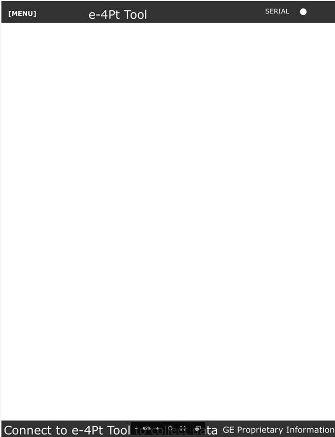
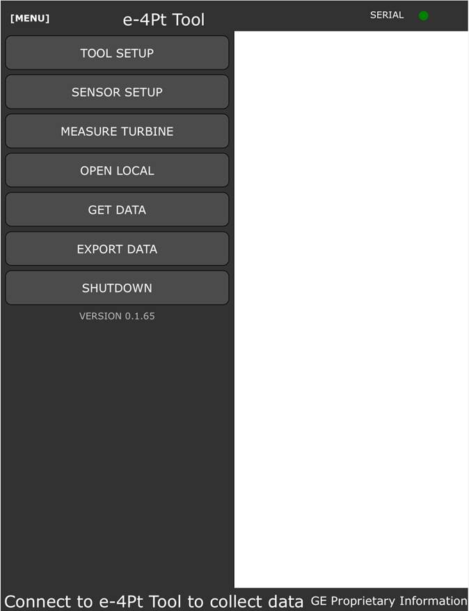
5.4.8. Ensure the dark refence cap is snuggly fit over the end of the sensor and then select the “Dark reference” submenu. Follow the on-screen instructions to perform dark-referencing of the sensor.
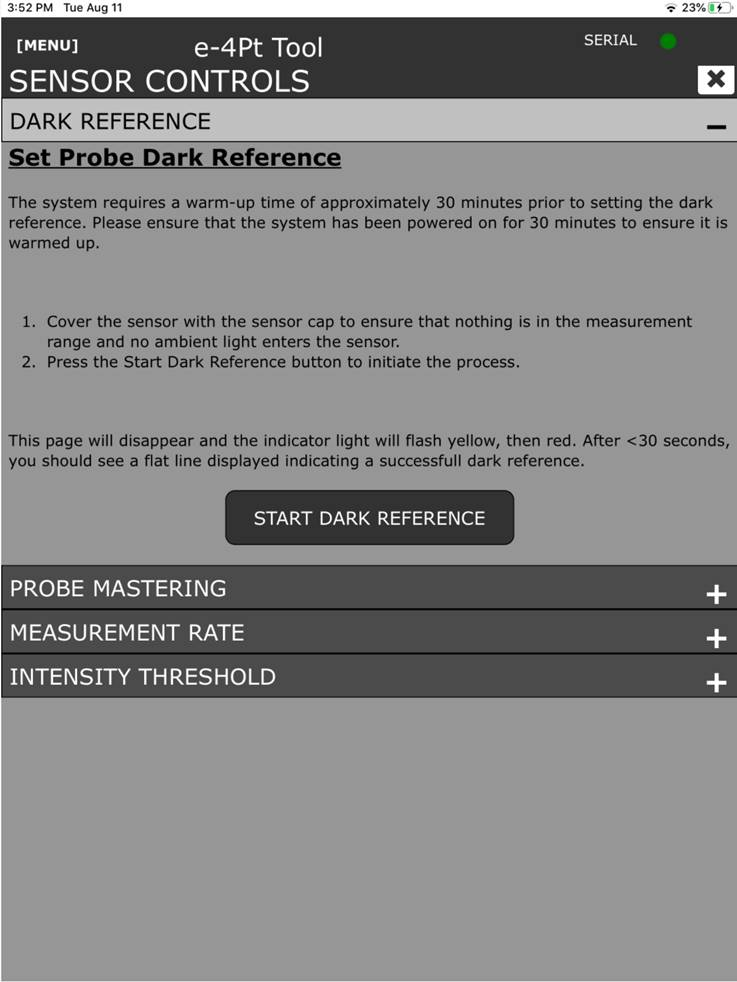
5.4.9. Remove dark reference cap from sensor. Clean the sensor mating surfaces and lens as directed above and carefully insert the sensor into the mastering fixture.
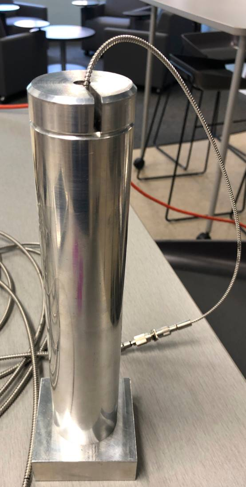
5.4.10. Select “Probe Mastering” from the submenu and follow on screen instructions for mastering the sensor. When Mastering has been completed the green “Ready Button” will transition to “Mastering Complete.”
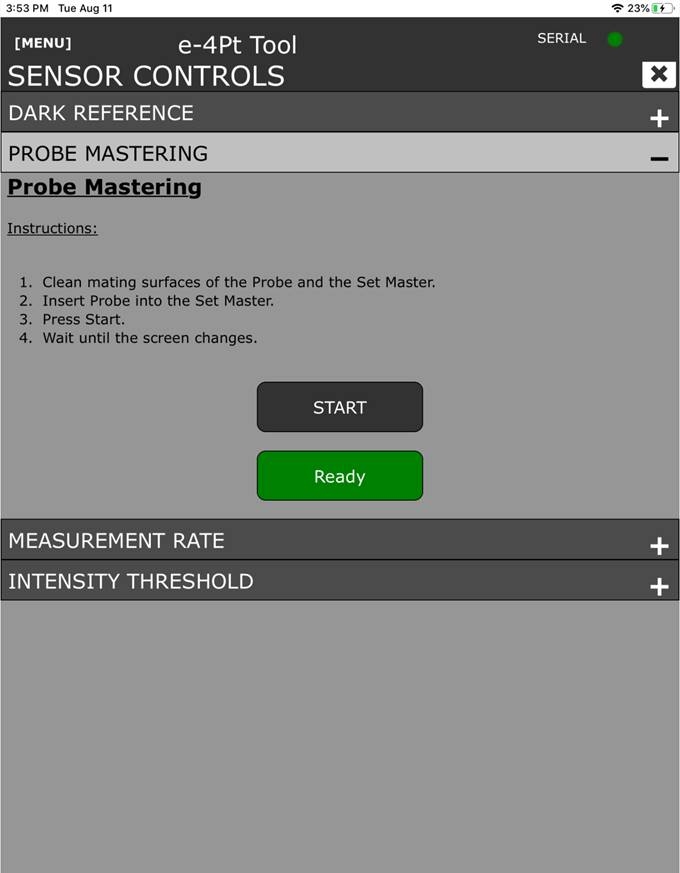
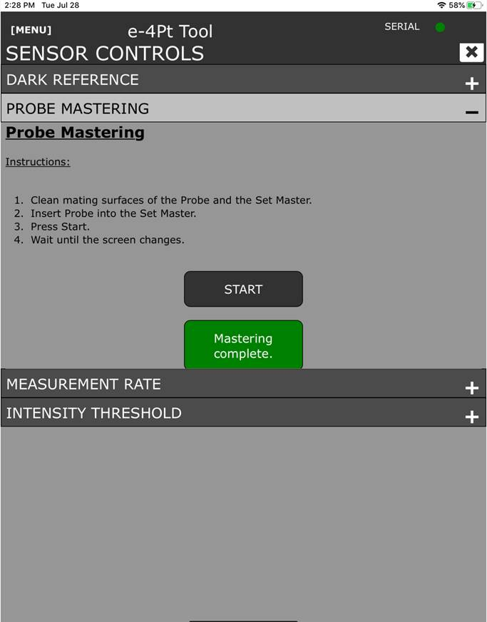
5.4.11. Verify that sensor mastering is acceptable by navigating to the main menu and selecting the “Get Data” submenu. Collect data for a short amount of time with the probe still placed in the mastering fixture. The display should be a constant line at 15mm
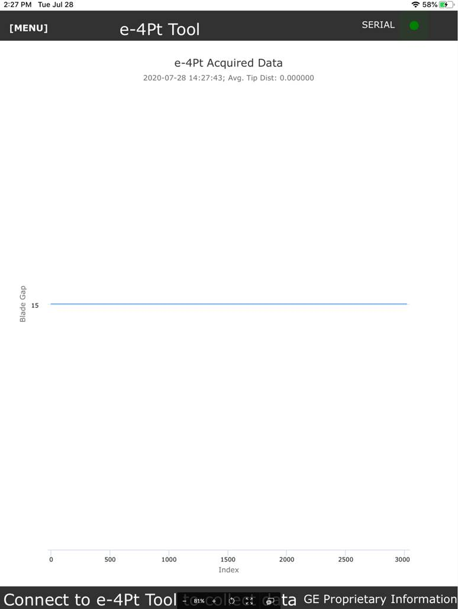
5.4.12. The sensor is now ready to use. Do not turn power off until all measurements are complete, data has been saved to GE Box, and a Customer report has been generated.
6. Use Procedure
NOTE:
For any given turbine the data collection process is the same. Follow the below instructions using the sensor and spacers prescribed for the turbine frame being measured.
NOTE:
At no time should the e4 point app be closed or backgrounded during operation/data collection. This could cause the app to loose the serial connection to the sensor and result in a need to recollect the data
6.1.1. Determine and collect the rotor actual RPM for later use/calculation.
6.1.1.1. Ensure the Rotor is rotating at a constant rate between 0.5 and 15 RPM.
6.1.2. Turbine Data Collection Menu
6.1.2.1. Select Main menu and enter “Measure Turbine” submenu.
6.1.2.2. Select or enter all appropriate information in the entry boxes or drop down menus then select Next at the bottom of the page
6.1.2.3. Select “Collect Data” to begin data collection process.
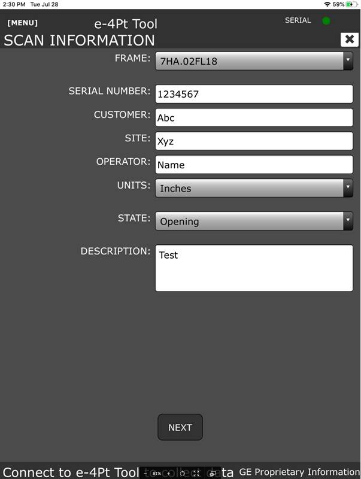
6.1.3. Turbine measurement screen
6.1.3.1. Determine starting location on turbine and select it from the drop-down menus.
1. This can be performed by selecting from the drop-downs or manually selecting the desired cells.
2. User can manually scroll left/right and up/down by using the touch screen. This may be necessary for frames that require more data.
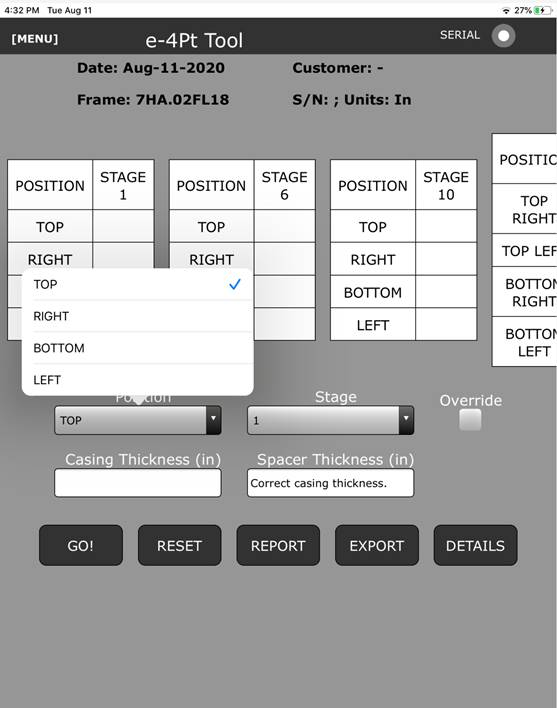
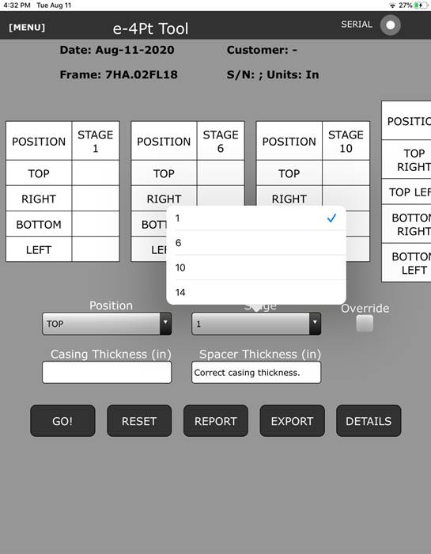
6.1.3.2. Enter Casing thickness for desired stage and location. Spacer thickness and color code are automatically populated.
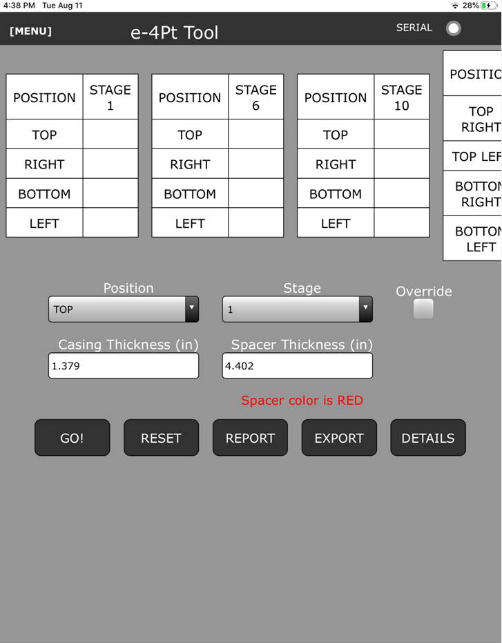
6.1.4. Clearance measurement
6.1.4.1. Place the prescribed spacer in the clearance probe depression on the casing and verify a solid connection between the casing and spacer magnets.
1. Units with a double wall casing can collect debris on the mating surface. It has been found that inserting the spacer to collect all ferrous material from the inner casing is an effective way of clearing out the debris.
6.1.4.2. Insert the Dummy probe (slightly longer than the sensor) into the spacer and through the casing. Wait an appropriate amount of time to allow several blades to pass over the dummy probe before removing the dummy prob. This ensures that the sensor will not impact the compressor airfoils. When satisfied that this safety check has been completed, remove the dummy probe.
6.1.4.3. Carefully insert the sensor into the spacer and through the casing. Sensor magnets will engage with the spacer magnets to provide semi-rigid connection.
6.1.4.4. Select the “Go!” Button and enter Rotor RPM previously obtained.
6.1.4.5. The App now calculates Sampling Rate and Intensity Threshold based on the below Plot/Table. The sampling rate and intensity threshold are used to ensure the minimum number of points per airfoil are obtained while performing the clearance inspection. Intensity Threshold and Sampling rate are calculated prior to each measurement and depend on the turbine frame, number of airfoils, and rotor RPM.
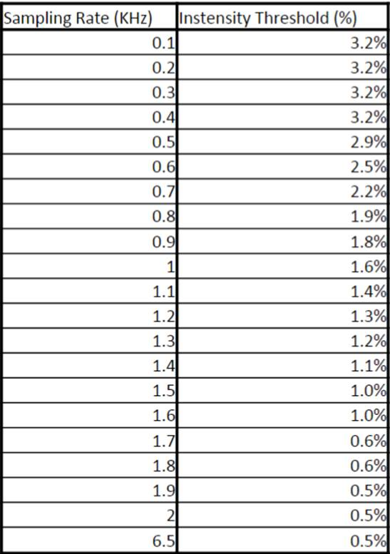
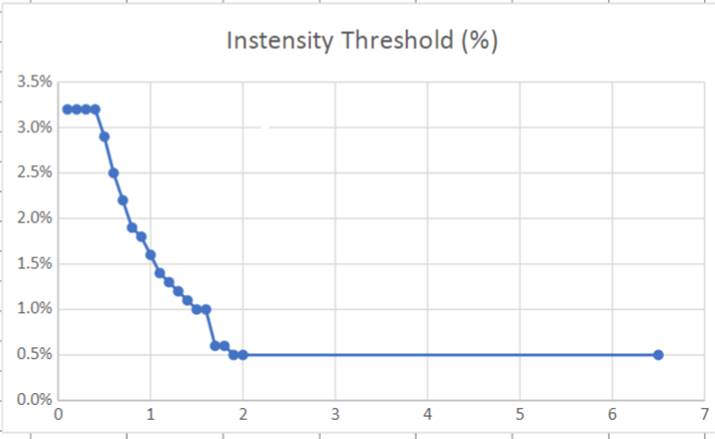
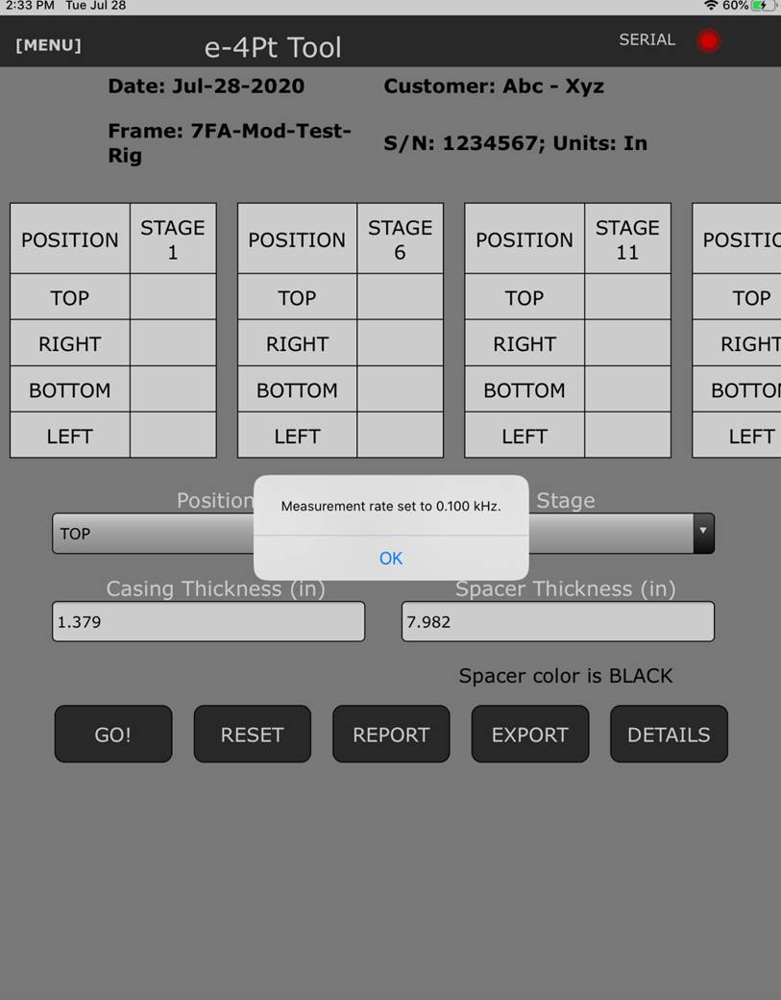
1. If the acquired data is not sufficient or if it the tool is presenting inconsistent data the intensity threshold and sampling rate can be overridden by selecting the “Override” check box. This will allow the user to re-master, set intensity threshold and set sampling rate.
Note: Care should be taken to match Sampling rate with Intensity Threshold based on the above table/plot.
Note: Re-mastering may be required in unlikely instances and should be performed as a last resort. See mastering procedure above
6.1.4.6. The tool then begins measuring the compressor airfoil tips as they pass the sensor. The Serial connection dot turns Red while data is being recorded. A green progress bar is shown at the bottom of the screen to show progress of data collection and provide user feedback in the event that the app freezes.
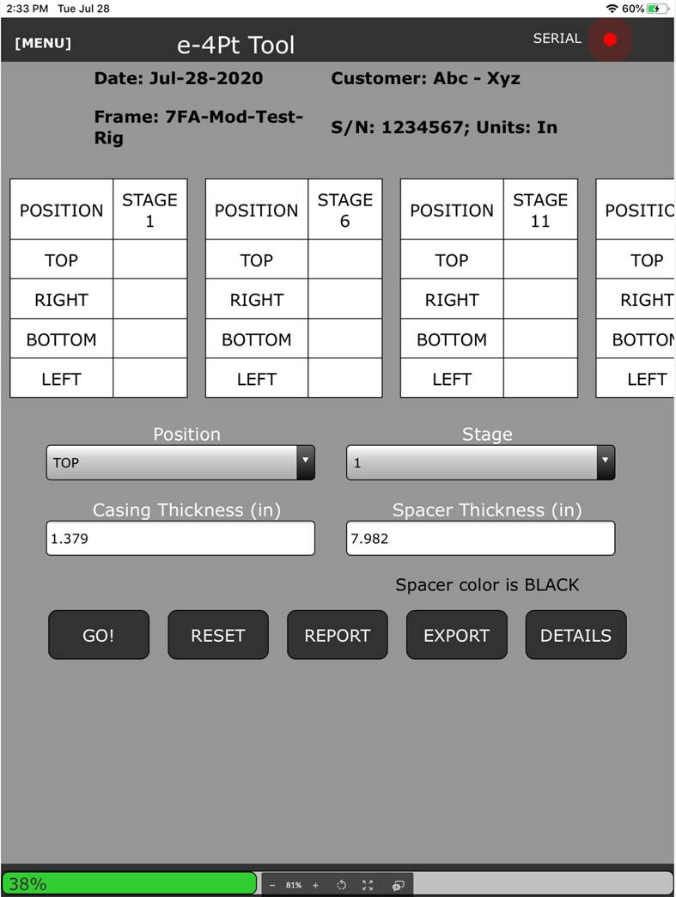
6.1.4.7. When the data has been fully collected the app will populate the clearance data in the table at the top of the screen for the measured stage and location.
6.1.4.8. The App will also show a circumferential plot of clearances on the main screen
6.1.4.9. Useful statistics will be presented on the Details page.
6.2. Data management and reports
6.2.1. When the clearance checks have been performed and completed satisfactorily it is necessary to store the raw data for use by the Clearances team. This is done by exporting the raw data to a Box folder or by emailing the reports to the clearances team.
6.2.1.1. Exporting information is done by selecting the export button, selecting all files for the given turbine, including failed or inconsistent data collections, and then selecting the method of export.
1. It is necessary to navigate through the levels of Box to get to the correct folder. There is no one nexus for clearances data…yet.
2. All emails from the e4 point app will be sent through the iPad or iPhone’s email app. Email attachment size is limited, so multiple exports to email may be necessary
6.2.1.2. To generate a customer report simply press the “Report” button. This report can then be sent to the customer via email. It can also be sent to the Box repository
6.3. Clean up
6.3.1. Wipe down all spacers and Dummy Probes with a lint free cloth and place them into the provided Pelican case in their prescribed spots.
6.3.2. Clean sensor and lens as described in section 5.1.2
6.3.3. Carefully coil the fiber optic cable into the large cut out in the controller Pelican Case
6.3.3.1. Care must be taken to prevent kinking the cable.
6.3.3.2. Place the sensor, with dark reference cap on, into foam cut out sized and shaped for the sensor.
6.3.4. Place the Mastering Fixture into the cut out sized and shaped for it
6.3.5. Carefully coil RedPark and Sensor cable into small cut out, along with Power cord.
6.3.6. Carefully close box lid to prevent snagging any wires. Latch box shut
7. Troubleshooting
Typical data errors
|
Issue |
Solution |
|
Serial connection indicator is not green on initial start up or connection error message |
1.) Open Main Menu. This will initiate app communication through the serial port. 2.) If not green after opening main menu, chck serial connection is firm and fully made 3.) Fully close app, disconnect serial cable, reconnect cable and restart app. Open main menu |
|
Dark Reference plot does not show flat line at 15mm |
1.) Dark Reference cap is not snuggly fit over sensor lens. Adjust cap and Dark Reference again 2.) Cap may be damaged. Place sensor lens on a solid flat surface, keeping lens perpendicular to the surface. Dark Reference again. |
|
Mastering plot does not show results around 5mm or Plot has a slope to it |
1.) Clean mastering fixture with compressed, oil free and dry air. Clean sensor lens with lint free optical cloth and remaster 2.) Reperform Dark Reference and Master again. 3.) Turn System Off and back on Wait for 30 minute warm up and reperform Dark Reference and Mastering 4.) Contact tool center for further troubleshooting |
|
Collected Data on output plot does not show as expected across all airfoils in a stage |
1.) Remove and clean spacer and sensor lens 2.) Remaster sensor 3.) Using “override” check box adjust Sampling Frequency and Threshold Intensity IAW table and figure. Adjust incrementally until results are acceptable |
|
Dummy probe is decapitated by compressor airfoil |
1.) Incorrect spacer was used. Locate correct spacer and replace dummy probe. Repeat procedure |
|
|
|
8. Tool Maintenance Instructions (for Tooling Manager)
8.1. Upon receiving new tooling from vendor or tool center. Perform an inventory to ensure all components are in the kit as intended.
8.1.1. Inventory the kits referencing the appropriate bill of materials. If any of these components are missing they must be replaced before placing the tooling into storage or shipping to the next job.
8.2. Setup and test system using the steps outlined in section 5.4.
8.3. If available test tool on a desktop test rig to verify that tool reads clearances from a moving airfoil as expected.
8.4. Clean and inspect all components taking care to clean sensor lens with a lint free optical cloth.
9. Appendix
9.1. Appendix A - Reference Documents
ITS Roll In / Roll Out Tool Procedure: FRD-2016-1046, 105T2414
HA Alignment Diagrams: MLI0404
ITS Pusher Tool: 685-10-09
128T8348 TRACC SCAN OVERALL ASSEMBLY
126T0468 STG 1 LASER PROBE BRACKET
128T9418 STG1 ALIGNMENT BLOCK SET (SET OF 4 BLOCKS)
126T0469 STG 4 LASER PROBE BRACKET
126T0470 BASE STATION
129T7000 ANTENNA
126T0471 LASER MODULE
126T0472 STG 1 INSTALLATION & REMOVAL TOOL
126T0479P0001 STG 1 RATCHET WRENCH (TEKTON - WRN77005 OR EQ. )
128T4173P0001 SHIPPING FOAM
128T9437 TOOL INSTALLED SAFETY FLAG
128T8348P0001 USB 2.0 TO MICRO-USB CABLE, (VENDOR CHOICE, 3FT LONG)
130T0848 LASER CHECK BRACKET